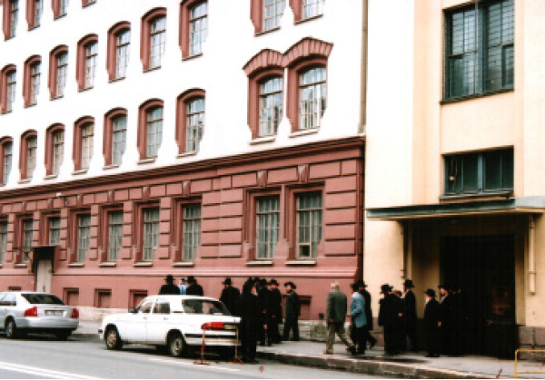
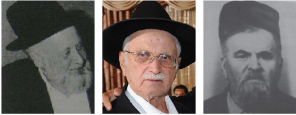

Pesach: From Imprisonment to Freedom
In issue 872 there was an article about the Kublanov family and their suffering in the Soviet Union. R’ Krepel Kublanov passed away shortly before Pesach one year ago. He was one of the old-time Chassidim in B’nei Brak who suffered for years in labor camps in Russia. * A number of years ago, he told me his life’s story. The following is about Pesach behind the Iron Curtain.

PART I
Pesach night 5711/1951.
The children of the Kublanov family were sitting alone in their parents’ apartment on 40 Kalina Street in the heart of Leningrad – Krepel, Shterna, Luba, Mendel and his wife. The parents, R’ and Mrs. Eliezer and Elka, were behind bars. The sister Chai’ke was also in jail. The atmosphere was morose. It was hard to believe it was Pesach, our holiday of freedom.
This was during the period when the dictator Stalin reigned. The noose extended to catch religious Jews, especially Chassidim, was tightening. Hundreds of Chassidim had been caught and sent to the frozen wastelands. Many others disappeared with their fate unknown. Millions of political prisoners were also exiled from their homes. If there was the slightest suspicion about someone being against the government, his fate was sealed.
After attempts made by the Kublanovs to escape Russia via Lvov-Lemberg for a life of freedom had failed, their lives were even more precarious. For some reason though, the communists didn’t rush to arrest them. They spun a web around them and waited.
R’ Eliezer, a Chassid, G-d fearing, and a man of tz’daka and chesed, was arrested first. On Motzaei Shabbos B’Reishis 5711, they came to his house in the dead of night and took him away. This was not the first time; they had been after him for years and he had been arrested previously for brief periods.
Three months later they were back, and this time they took the daughter Chaya. A week later the mother was arrested. They were put in the notorious Spalerka prison; it was well known to Anash for this is where the Rebbe Rayatz spent several weeks. It was known for its evil interrogators, the cruel soldiers and abysmal conditions.
No wonder then, that the spirits of the remaining children were low. They read the Hagada, told the story about freedom and Geula, about the promise and the hope, and they hoped and prayed that they too would experience redemption and freedom.
The Kublanov children did not spend a long time at the table. As soon as they finished the Hagada, the oldest son Mendel and his wife left. The rest of the children went to sleep in a heartbroken state of mind. Not much time elapsed before loud bangs at the door were heard. The police were back and this time they took Krepel. Krepel was 22, a fourth year medical student in the exclusive University of Leningrad.
They took him without saying a word and slammed the door behind them. Now the fourth member of the family had been taken. Hashem! Ad Masai? How can we go on?
If that wasn’t enough, that same terrible night the wicked ones came back two more times. They took the two daughters Luba and Shterna.
Mendel first heard about this in the morning. He realized that he had been saved because he left the house half an hour earlier, but he knew that his turn was next. He was no longer worried. He didn’t care if they arrested him. Actually, he wanted to be with his parents; perhaps he could be of help to them.

PART II
The brothers a”h had much to say about their suffering in the icy wastelands of Siberia and the deserts of Kazakhstan. Days and weeks could go by and they would not have finished telling everything they went through.
It is a mitzva for a person to tell of the miracles that occurred to him, to praise Hashem for the miracles. There is no better time than Pesach when we are told “to relate” the story.
The following is only the story of Krepel, a miraculous story which happened to him on Pesach in the labor camp. It is one episode out of hundreds like it.
***
The wheels of the freight train banged rhythmically against the iron tracks. The train, which was designed to transport animals, was bringing thousands of prisoners to labor camps. Among them was the Chassid R’ Krepel Kublanov. Stalin had set up a huge city of prisoners that was divided into a number of camps. Vorkuta was its name. It was several thousand kilometers from Moscow, very far from human habitation. About half a million political prisoners and criminals lived here.
The winter of 5712 had just begun and piles of snow half a meter high already covered the ground. No trees or vegetation grew there. It was a land of eternal snow and ice where darkness prevailed for half the year. Only in the summer was there some light, more like twilight than daylight.
A few days after his arrival, Krepel was attached to a group of prisoners to work in the coalmines. These mines were located about five hundred meters underground. There was an elevator that took them down. The work was backbreaking. Krepel and his work partner, a political prisoner like himself, had to collect coal and load it into a special railroad car. When the two of them finished loading the wagon with half a ton of coal, they had to drag it over the tracks towards the elevator where it was taken up to be sorted and shipped.
The work was extremely dangerous. The air in the mine was laced with poisonous gases. Even the slightest spark could blow up the mine and bury the slave laborers inside. This happened often enough. Krepel knew this could be his fate.
Outside the mine the temperature was forty below zero and the winds were fierce. Krepel didn’t know where it was more dangerous, in the stuffy mine or in the snowdrifts that never melted. He sweated as he pushed the half a ton of coal over the tracks. His thoughts were far away, on his father, mother and sisters. What had happened to them? Where were they now? Were they still alive?
A half a year had passed since Krepel had begun working in the coal mine, twelve hours a day. The work was done in shifts around the clock. Bread was measured out, only 600 grams a day, and he felt his strength ebbing. The two hundred meters from the coal mine till the barracks were done on foot in a state of exhaustion. He knew that he couldn’t last long and would collapse under the burden. And who knew where he’d be buried and who would care when hundreds of thousands perished in far-off Vorkuta.
What made it more painful was seeing his fellow prisoners receiving packages from home. These packages revived them for a month or two, strengthening their bodies and mainly their spirits. But he received nothing from home. Who could send him anything? His father? His mother? His sisters who were in other labor camps?
PART III
At some point, Krepel found out that the administration of the camp was providing a special course for prisoners who wanted to learn First Aid. They were interested in this since they lacked medics, and they wanted help from the prisoners in the event of accidents which happened frequently, and other tragedies.
Krepel had learned plenty about medicine in his four years in university and he wanted to take the course. He thought his fortunes might improve and he could get accepted to work in the camp’s hospital, which would be much easier work than the grueling work he was doing.
He asked to be registered for the course and presented himself as a medical student who had much knowledge in this field. The woman looked him over and after thinking about it she said coldly, “No, you have to work in the coal mines.”
Krepel was devastated. His hopes were shattered. He dared to ask again, perhaps he would be accepted. The woman repeated her answer and said, “Even if you were accepted to this course, you would have to continue working in the coal mines. You could only study the material at the end of your shift.”
Krepel pictured how he felt at the end of a shift, how his legs faltered and with drooping eyes he dragged himself to his wooden bunk, but he knew this was his only chance. He knew how much it would take out of him but said, “I want to do it anyway.”
From then on, every day, at the end of work, he would stumble over to the medical course. The course took a few months, at the end of which a test was given. Krepel remembered the anatomy and physiology courses he had taken in the university and he added more details than required on the test. He even used Latin medical terms.
But the evil people in charge did not provide him with the hoped-for work. They knew what his goal was, to be dismissed from hard labor in the coalmines.
A few months passed and he was not called to do any medically related work. One day, he waylaid the woman in charge and said, “What will be with me? Can I work as a nurse?” Both he and she knew that they were not allowed to talk to one another. She looked around and then whispered, “Wait another few months and it will be okay.” Then she quickly walked away.
Krepel did not know whether to rely on her vague promise or not. He sadly went back that evening to work in the mines.
PART IV
The end of winter 5712.
The snow was piled high. It was still freezing. The hundreds of thousands of prisoners continued to produce their quotas. There was no mercy.
Krepel was adversely affected by the starvation and the elements. He became sick with hepatitis and was sent to the camp hospital. How he had longed for a few days of rest, to be able to lie between sheets and peacefully gaze at the ceiling. The difficulties in the hospital paled in comparison to working underground.
After a few days and medical treatment, he began feeling better. He began thinking about the work he would be returning to and his heart sank.
One day, a doctor asked him, “You studied medicine?”
“Yes,” replied Krepel.
“Then maybe you can help us.” He asked Krepel to get up early every morning and make the rounds of the patients and take their temperature. Krepel was thrilled. Perhaps this would lead to a job in the hospital for him.
The next morning he put on the white jacket of a nurse and began making the rounds. He did his work faithfully and professionally. He did more than he was asked to in order to find favor with the senior medical staff.
Some days went by like this and Krepel was well enough to be released, but his excellent work was valued by the doctors. Although he was still officially listed as a worker in the coalmines and was not permitted to remain in the hospital any longer, the natchalnik looked away.
One night, Krepel approached the bed of one of the patients. He took his temperature, checked his pulse, and wrote the information down in the file. He was about to move when the patient motioned to him that he wanted to speak to him privately.
At a certain point, when nobody was in the room, the patient whispered, “Are you a Jew?”
Krepel said he was and the man asked him, “Do you speak Yiddish?”
Krepel said he did and the man’s eyes lit up. The patient was about fifty years old but looked a lot older.
“My name is Wechsler,” he said briefly, and there was a silence. “Do you know that it will be Pesach in a few days?”
Krepel looked at him and remained silent. In his mind’s eye he could see scenes of the previous Pesach when he was taken from his home on the Leil Shimurim. He looked at the patient and understood what the man wanted.
“You have matza?” Krepel asked though he thought he knew the answer.
The man nodded, “Yes, but only one.”
“Will you give me half?” beseeched Krepel.
“I can’t. I have only a k’zayis with which to make a bracha.”
Krepel gazed into the man’s eyes and said, “But I am also a Jew. I too need to say a bracha.”
The patient shrugged and his eyes looked sadder than usual.
“I don’t know. We’ll see.” He ended the conversation without Krepel knowing what would happen in the end.
Krepel said, “I am waiting here for you Erev Pesach to get matza from you,” and hurried out of the room.
Two Jews in the land of ice and snow, frozen in body and spirit. Arguing about the right to say a bracha and fulfill the mitzva of eating matza.
PART V
14 Nissan, Erev Pesach 5712.
Krepel circulated among the many hospital rooms, busy over his head with work. Shortly after noon he suddenly encountered Wechsler. He remembered that sad face of a Jew in galus. Wechsler pushed a faded paper envelope into his hand. “Here is the matza,” he whispered. “If you are caught, don’t tell anyone that you got it from me. Otherwise, I will be stuck here for another ten years.”
Wechsler disappeared quickly as Krepel caressed the envelope with the pieces of matza in it. He quickly put it into his white jacket. The jacket was filthy and stank. He went to change into a new jacket. Without realizing it, he took the senior doctors’ jacket and put the matza into the deep pocket. He noticed that along with the matza was included a small Hagada. Unbelievable! A Hagada shel Pesach! Here in the Siberian camp!
That night, Krepel secluded himself in his room, locked the door, opened the paper and spread the pieces of matza on the table. It was his first Pesach in Siberia. With tears streaming from his eyes he read the Hagada. When he got up to Motzi Matza, he said the bracha reverentially and ate the broken pieces in front of him. When he finished his private Seder, he rushed back to his night shift with the patients.
The senior doctors and administrative staff showed up the next morning as usual. They went over to Krepel, as they always did, in order to get a report about the patients and how they did the night before. They surrounded him and heard his usual report. Suddenly, a doctor patted Krepel’s lapel and angrily asked, “Where did you get this new jacket from? Ah, a Zhid, a thief. Where did you take it from? Take it off this instant before I throw you out of the hospital!”
Krepel was frightened. Although he was always the black sheep on the medical team, nobody paid attention to him; but they had never treated him like this. He quickly removed the jacket and the doctor snatched it from him. He shook the jacket vigorously as though wanting to vent his anger and as he did so, some crumbs fell out.
The doctor looked at the crumbs, bent down to the ground and collected a few. When he stood up again, he stared at Krepel and said, “Matza, right? Ah, today is Passover for the Jews, is it not?”
The doctors and the hospital administrator stood around and stared at Krepel who stood there alone among them, a persecuted Jew on the morning of the Holiday of Freedom. The question was direct. Thoughts swirled around Krepel’s head. Should he admit it or deny it? Who knew how many years they would add on to his sentence because of this awful “crime?” He felt the noose tightening around him as they stood there waiting for his response. He knew he could not delay any longer and he said, “Yes, it’s matza,” as he waited for the ax to fall.
A long moment passed, an eternity. The doctor looked at the other doctors and they looked at him, waiting for him to say something. Krepel felt as though the earth was open beneath him and was about to swallow him. The doctor then put his hand on his shoulder and in a quiet voice he said, “You’re all right.” He turned to look at the other doctors and said, “He’s one of ours!”
At first, Krepel had no idea what had just happened. He thought the doctor was making a mockery of him, but the doctors dispersed. Only afterward did Krepel understand that the doctors were also political prisoners who were sentenced there for years for opposition they expressed against Stalin. When they saw his Jewish courage, his unflinching readiness to endanger his own life in order to observe the laws of his religion, they considered him one of them. If until then, Krepel was a marginal member and not considered a member of the medical team, from then on he was one of the boys. He was accepted by them as an equal.
PART VI
Krepel Kublanov went on to tell of the last Pesach he spent in the camps. In the merit of his avoidance of chametz, he received the joyous news of his sudden release, three years early.
Krepel spent five Pesachs in the labor camps, from 5713 to 5717. He spent the last Pesach in a prison camp in Moldavia, about 450 kilometers from Moscow. This camp was easier and more comfortable than the first camp he had been in, and the climate was more pleasant. Since the death of Stalin, life in general was much easier. The atmosphere of terror diminished significantly.
In this camp, Krepel worked as a doctor in the local hospital. Five years in prison did not diminish his yearning to be released and return home; especially after he found out that his older brother Mendel had been released early.
Mendel located Krepel and several months before Pesach he sent him a package with matza and sugar. Krepel was determined to avoid chametz this year, once again. He had matza and even a treat like sugar, but he worked hard and lack of nourishment made him weak. He worked with the patients day and night, examining them and devoting himself to them to the best of his ability. This depleted him of his strength, and with so little food he lost weight quickly. Nevertheless, he continued to do his work, his main goal being not to lose his position.
On the last day of Pesach, Krepel was suddenly called to the office of the hospital administrator. She was known for her toughness and attention to detail, which was why they all feared her. This summons did not bode good news.
“Dr. Kublanov,” she began curtly. “Are you sick or is something amiss? I see that you look sick. Tomorrow go to the central hospital where you will be examined.”
Her generosity was a fake. Krepel realized that being hospitalized meant losing his position. He knew that it was highly unlikely that he would be able to return to his job, and who knew what hard labor they would send him to do. He decided to fight for his job at all costs.
“I would like to know – are there are any problems? Have I made any errors with my patients? Did anyone complain about me?”
The woman was as surprised by what he said as by his brazenness. She said that no complaint had been issued against him “But look at you,” she said in a compassionate voice.
She tapped nervously on her desk with her pen and then said, “I’d like to tell you a secret, but you must not tell anyone.”
Krepel was taken aback by the personal note and nodded.
“My husband is a senior official in the KGB and he told me that in another two months a special governmental committee will be coming here for the purpose of releasing prisoners before their sentence is up. This committee will examine the files of various prisoners and those whose crimes are not that serious will be released from the camp after they make a formal request for clemency.”
Krepel was dumbfounded by this news. He had noticed the easing of restrictions and the changes that followed Stalin’s death, but he was surprised to find out that the government was going so far.
“I request of you,” she said, “to hang on for another two months. Just two months. And then, when you are called before them, express your regret at the attempt to escape and you will be released early.” She finished what she had to say and the coldness came back to her face. She ordered him to leave the room.
Indeed, two months later, the committee arrived. Krepel expressed his regret and they approved his early release home, three years less than what had been originally meted out to him.
So it was on Pesach that Krepel received news of his impending freedom; this was a result, he believed, of his care not to eat chametz on Pesach.
The circle of pain and suffering that had begun on Pesach 5711 was closed on Pesach 5717.
From an interview with R’ Krepel Kublanov a”h
FOUR CUPS OF TEARS
R’ Mendel Kublanov, Krepel’s older brother, added this from his memoirs:
I spent three Pesachs in labor camps. The first was in 5712 and the last was in 5714. If I had stayed at my parents’ house that terrible night for a half hour longer, I would have spent Pesach 5711 in prison too.
I was sent to a labor camp in the Rudniy area, about 1000 kilometers from Karaganda, which is in northern Kazakhstan, in the hot desert. Thousands of prisoners worked mining copper from the dry earth. I worked as a doctor in the local hospital.
The following story took place on Pesach 5712, my first Pesach as a prisoner. I had received two packages of matzos from my wife in Leningrad, along with sugar, oil, cooked fruit and nuts.
There were other Chassidim there with me in the camp, including R’ Moshe Mordechai Epstein (Pinsky). He learned in Lubavitch and was a rav in Niezhin and then an unofficial rav in Leningrad. There were also R’ Avrohom Fradkin, R’ Shlomo Berzin, and a Karliner Chassid by the name of Moshe Melamed.
I had a small pot and I wanted to kasher it before Pesach for me and the other Chassidim. What did we do? We made a small bonfire, boiled water and that’s how we kashered the pot. While doing so, I couldn’t help it. My emotions overcame me and I said to R’ Moshe Mordechai bitterly, “We could be in Leningrad now, sitting like princes, as free men. Where are we now? Look at us.”
R’ Epstein was an outstanding Chassid with a strong belief and trust in G-d and he said, “Mendel, maybe Hashem sent us here to this place so we would kasher it for Pesach and do the avoda of birurim here.” That was his emuna.
Before Pesach, R’ Avrohom Fradkin told me that he had some matzos he had received from home, but one of the prisoners had stolen them and he asked me to give him matza. I was afraid for his welfare so I had him hospitalized with some illness as an excuse and gave him from my matzos. In order not to be seen, he ate them under his blanket and that is how he observed the holiday.
That same night there was no place for me to sit and eat the matza. The situation was very dangerous and I was afraid someone would see me eating it. I put the matza in my pocket and began walking among the barracks as I ate it. I recited the Hagada by heart. Oy, how I cried! I thought of my father and mother and wondered where they were, what had happened to them.
That night, I drank more than four cups of tears.
***
Every year before Pesach, I would get a package with matzos in it from my wife. However, every year I worried about the next year. Perhaps I would be sent somewhere else and she wouldn’t know the address. Perhaps they would not allow me to receive the package. So I would keep some of the matzos for the following year’s Pesach. So that they wouldn’t dry out or get moldy, I took them out once a month and aired them out.
As I said, the Chassid R’ Shlomo Berzin was there with me. We were very friendly. In 5714, close to Purim, R’ Shlomo told me that he had found out that they were about to transfer him to another camp and he was afraid that his wife would not know where to send him matzos and he would remain without matzos for Pesach. He asked me to give him some of the matzos that I had.
It was very hard for me to do this. I told him, “What if I too don’t get matzos this year? That is why I kept these all year!” In the end though, I couldn’t withstand his entreaties and I gave him my matzos.
The end of the story was that I received a package of matzos before Pesach and he did too, and we both celebrated the holiday of freedom, each in his place.
From an interview with R’ Mendel Kublanov
Menachem Ziegelboim. "Pesach: From Imprisonment to Freedom." Beis Moshiach, no. 874 (March 21, 2013).